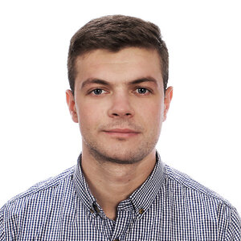

|  |
Hubert Skałoń
Software System Test Engineer in Aptiv.
I was born in Tuchów in 1993. I was growing up in Gromnik. In 2012 I have started education on AGH in Kraków, graduate from AGH in 2017. Today I am living in Kraków for good. I am working at Aptiv as a Tester and HiL Operator in ADAS - Advanced driver assistance systems. |
|
Master's degree of Mechanical Engineering Faculty of Mechanical Engineering and Robotoics. Specialization: Engineering of Ecological Systems and Eco-energy. |
Feb 2016 - Jun 2017 |
|
Engineer of Science in Mechanical Engineering. Form of study: Full-Time programme |
Oct 2012 - Jun 2016 |
|
|
Sep 2009 - Jun 2012 |
| Aug 2017 - Present | |
| Dec 2016 - Present |
|
| Jun 2016 - Dec 2016 | |
| Feb 2016 | |
| Jun 2016 - Dec 2016 |
| ★★★☆☆ | |
| ★★★★☆ | |
| ★★★★☆ | |
| ★★★★★ | |
| ★★★★☆ |
| ★★★★☆ | |
| ★★☆☆☆ | |
| ★★★★☆ | |
| ★☆☆☆☆ | |
| ★★★★☆ | ||
| ★★★★☆ | ||
| ★★★★☆ | ||
| ★★★☆☆ | ||
| ★★★★☆ | ||
| ★★★☆☆ | ||
| ★★★☆☆ | ||
| ★☆☆☆☆ | ||
| ★☆☆☆☆ |